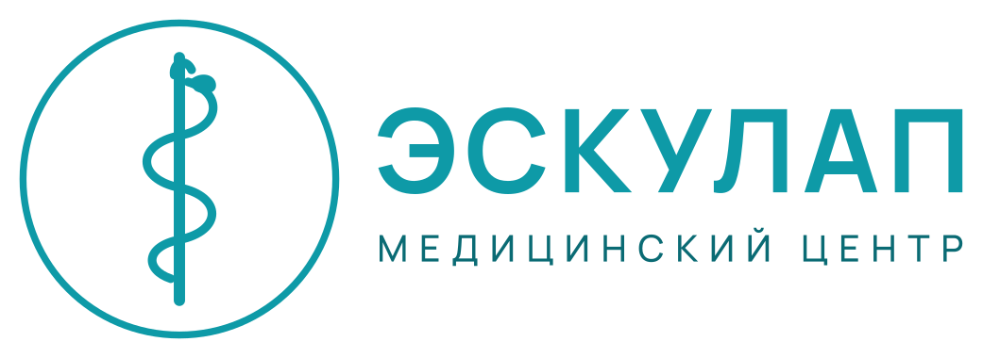

Eskulap
Профосмотры для работодателей: договор за один день.
♥ 68 · Comment · Share
No queue.
Профосмотры для работодателей: договор за один день.
♥ 68 · Comment · ShareEskulap medicina borboru ✓Медицинский центр «Эскулап»Eskulap medicina borboru ✓Медицинский центр «Эскулап»Eskulap medicina borboru ✓Медицинский центр «Эскулап»Eskulap medicina borboru ✓Медицинский центр «Эскулап»Eskulap medicina borboru ✓Медицинский центр «Эскулап»Профосмотры для работодателей: договор за один день.
♥ 68 · Comment · ShareEskulap Medical Centres, since 2002: GP and specialist consultations, ultrasound, X-ray, ECG, endoscopy, a laboratory, women's health, check-ups for employers, and Eskulap-Dent. No queue. Consultation from 45 som, ultrasound 60. Iradstrakh voluntary policies accepted. Six centres in Nurzhan, Talas and Iyık Janyl.
Медицинские центры «Эскулап» с 2002 года: консультации, УЗИ, рентген, ЭКГ, анализы, стоматология «Эскулап-Дент». Без очереди. Консультация от 45 сом.
6 locations on Kartalar: Talas 2, Nurzhan 3, Iyık Janyl 1.
Nursing diploma, Russian; shifts until 20:00.
Certificate in ultrasound diagnostics.
To apply: send your CV through the Message button or come to the office.
No reviews yet.